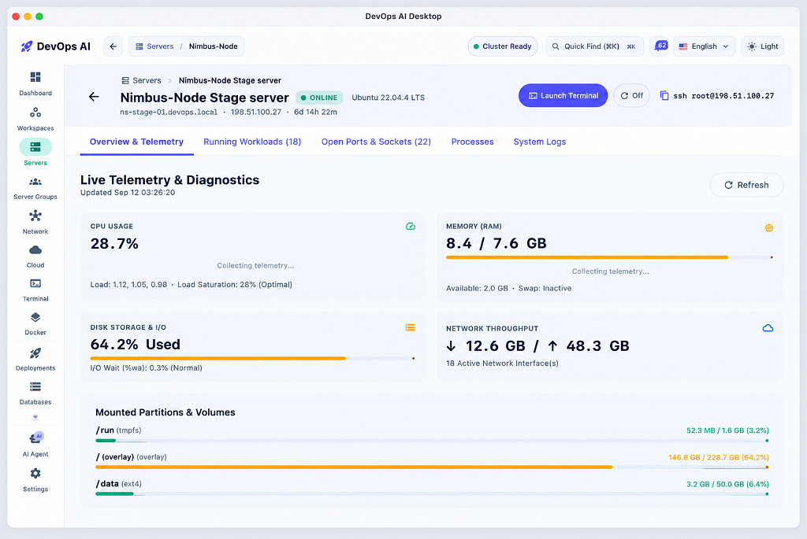
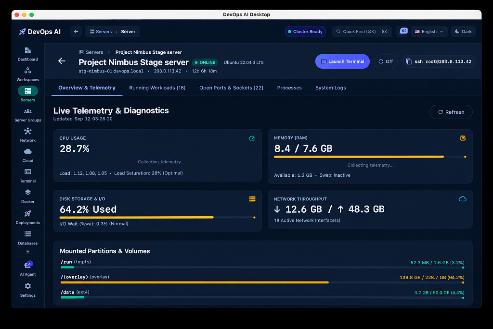

Stop babysitting your servers. DevOps AI monitors your entire VPS fleet in real time, autonomously detects and resolves production incidents, orchestrates Docker, manages Nginx SSL, and executes zero-downtime blue/green deployments — all from your desktop.


Direct SSH — no agents, no cloud sync, no remote daemons. Everything runs locally on your machine.
Scans dmesg for OOM events, Nginx logs for 502/504 gateways, and journalctl for daemon crashes. Executes risk-gated self-healing playbooks — disk cleanup, pagecache flush, and container restarts — with zero manual intervention.
Weighted 6-category audit: SSH, UFW Firewall, TLS, Docker isolation, package freshness, and secrets. 10 parallel probes. 1-click hardening for root login, port changes, HSTS headers, and Fail2ban setup.
Dual container slots (app-blue on 8081, app-green on 8082). Automated 3× HTTP health probes before traffic promotion. Atomic Nginx reload with zero dropped TCP connections. Git + HMAC webhook support.
Live CPU/RAM meters per container. Real-time stdout/stderr log streaming with search and auto-scroll. 1-click Start, Stop, Restart, Kill. Dangling image pruning, volume cleanup, and build cache reclamation.
GUI-driven virtual host creation with proxy pass, WebSocket upgrade, caching directives, and body size config. Certbot SSL issuance via Let's Encrypt. Pre-flight nginx -t validation before every reload.
1-click Postgres and MySQL container provisioning. Scheduled pg_dump / mysqldump with compression. Offsite rclone sync to S3, R2, B2. Retention pruning and 1-click interactive restore workflow.
Real-time CPU, RAM, Disk, and Network sparkline charts. Load average (1m/5m/15m), swap, and uptime. Systemd service manager with start/stop/restart. Background fleet reachability checks every 5 minutes.
Full PTY terminal emulation with raw shell access. Breadcrumb SFTP file browser with permission/owner/size view. In-app text editor with syntax formatting and remote save. Pre-built DevOps snippets catalog.
Isolated scopes: Production, Staging, Preview/Dev. AES-256-GCM encrypted key-value store with value masking and reveal toggle. Bulk .env file importer with comment stripping. Versioned history with instant rollback.
Live hop pipeline: Internet → DNS → Nginx → Docker → DB. UFW firewall rule editor with add/deny dialogs. TCP/HTTP/DNS diagnostics suite. NAT rules, SS connections (50-cap), and listening port discovery.
Periodic HTTP/HTTPS/TCP port health checks with response-time latency histograms and uptime percentage. SSL expiration alert triggers. Status code validation and incident event logging with risk classification.
Visual crontab editor with standard 5-field syntax and presets (every minute, hourly, daily, weekly). Manual execution triggers. Stdout/stderr execution log history per job. AI Copilot for natural-language task automation.
No agents • No daemons • Zero cloud dependencies
Single native installer for Windows, macOS & Linux. Self-contained with zero server setup.
Enter your server IP & private key. Encrypted locally with AES-256-GCM — never shared.
AI auto-discovers containers, Nginx proxies, firewall rules & telemetry in seconds.
Everything you need to know before installing DevOps AI.
Standard SSH • Zero Server Footprint. DevOps AI connects directly via SSH using host-key pinning. It interacts with standard Linux CLI tools (docker, systemctl, nginx, ufw). No background daemons or agents are ever installed on your server.
100% Local & Encrypted. Your SSH keys, passwords, and .env secrets are encrypted inside a local AES-256-GCM vault on your computer. Credentials never leave your device or touch any cloud servers.
Proactive Telemetry • Risk-Gated Playbooks. The AI continuously scans dmesg (OOM), Nginx logs (502/504), and journalctl for daemon crashes. On detection, it formulates a risk-classified playbook (pagecache drop, container restart) for 1-click execution.
Dual Container Slots • Zero TCP Drops. Code deploys to an idle container slot (app-blue or app-green). Automated 3-step HTTP health probes verify the release before Nginx reloads atomically with zero dropped requests.
Cross-Platform Native App. Desktop app runs on Windows 10/11, macOS (Apple Silicon & Intel), and Linux. It manages any Linux VPS or server running Docker & systemd (Ubuntu, Debian, Fedora, Arch, Alpine, etc.).
100% Free During Beta. All 12 core features — including AI SRE, Docker fleet management, database DR, and security posture auditing — are completely free for unlimited servers throughout the Public Beta.